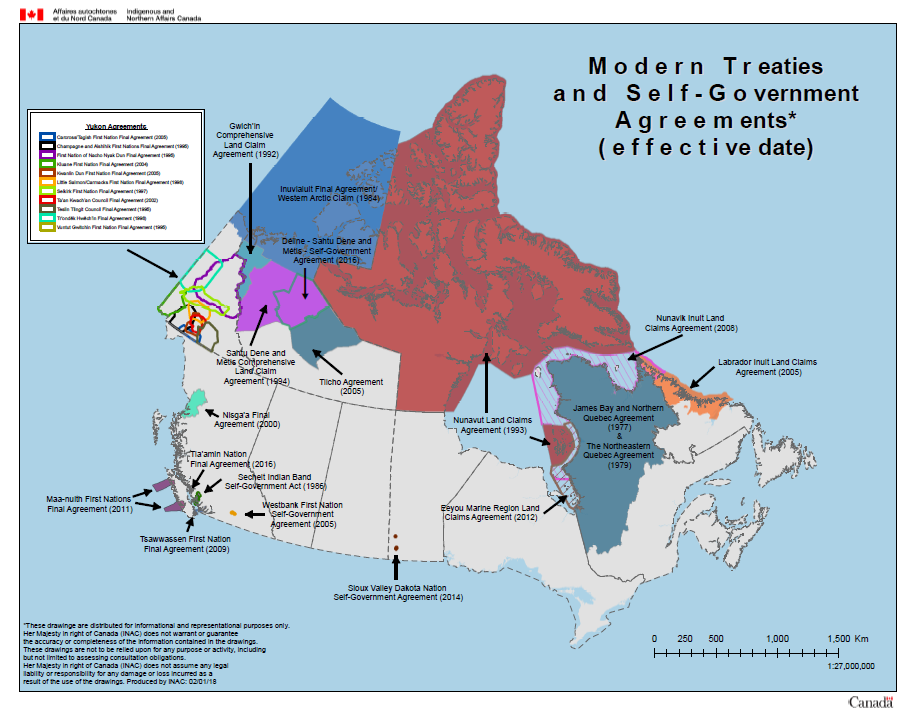

This fall has been marked with acts of violence and intimidation by non-Indigenous commercial fishers against members of the Mi’kmaq Nation in Nova Scotia seeking to carry out their treaty right to fish. These actions, and the accompanying inaction on the part of law enforcement officials, are a stark reminder that racism remains a persistent part of Canadian society. They also point to another significant barrier to the processes of decolonization and reconciliation the ongoing failure of the federal and provincial governments in Canada to uphold and implement treaties between Indigenous Peoples and the Crown.
A YouTube video about how treaties have helped the First Nations People. A Youtube video about the Treaty Number 1 150th anniversary. Modern treaties, also known as Comprehensive Land Claims Agreements, are concluded over long periods of time and contain a high level of detail. These sophisticated agreements are typically tripartite, including Indigenous organizations or nations, the Crown, and provincial/territorial governments as signatories.